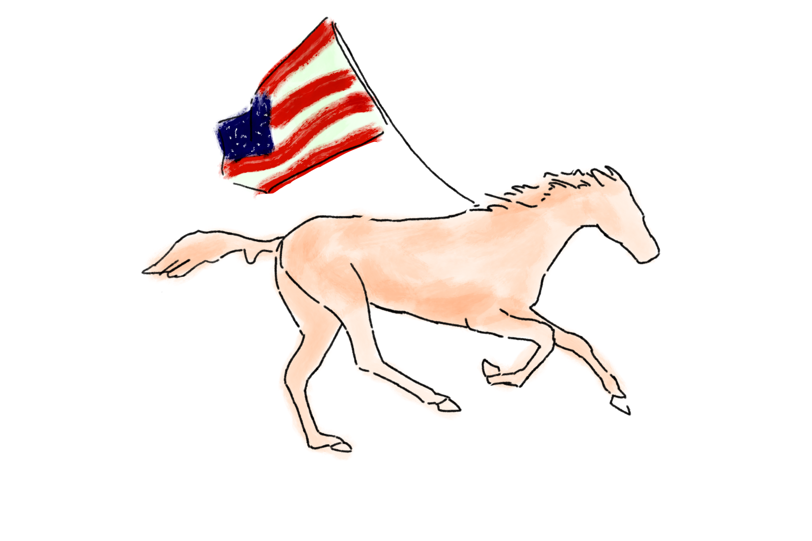

ELIZABETH "Lizzie Jane" SALINAS
( SHE/HER )
Instagram: @_lizzie_jane_studio_
Portfolio: LINK
About the Artist
Elizabeth Salinas is a Bay Area artist from Gilroy, California. Her work is inspired by her experiences as a woman and cultural influences from English traditions. She often explores environmentalism and the impact of humans on the planet. Elizabeth works with multiple mediums, including but not limited to photography, digital illustration, painting, coding, and sculpture. She is interested in the research of art history, specifically under the eye of semiotics and critical theory. Elizabeth is currently the digital media designer for a franchisee of YUM! Brands. Her professional work can be seen at yearly business partner conventions and multiple other events, as well as a number of annual magazine publications for said company. Elizabeth's work has been displayed in various group exhibitions at San Jose State University, where she has received a BFA in Digital Media as well as a minor degree in Pictorial Art.
To The Land That I Love
“To The Land That I Love” is an homage to the dream that so many in this nation shared, until we understood that it is not our reality. The United States is a country built upon the Manifest Destiny, its backbone, exploitation. When nations fall, governments turn to rot, and blind eyes turn away from the suffering, what is there left?
